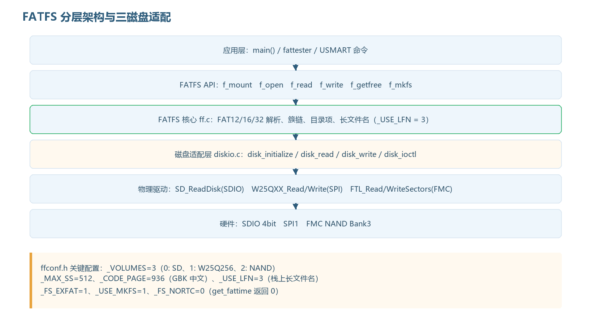
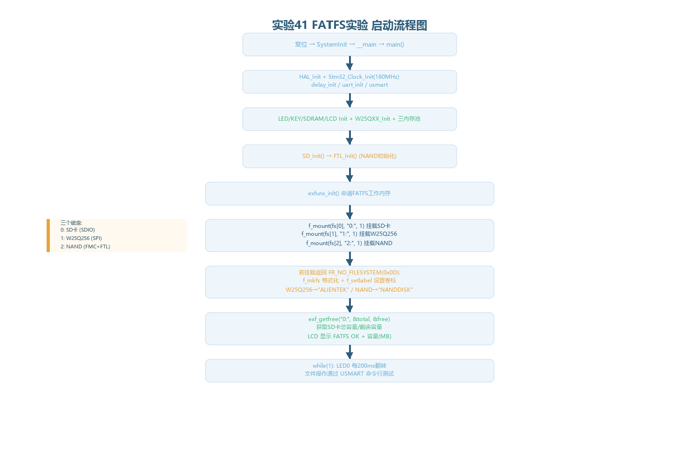
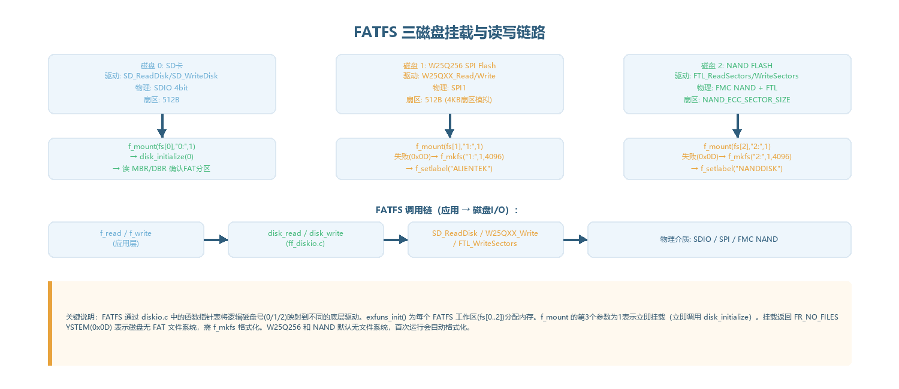
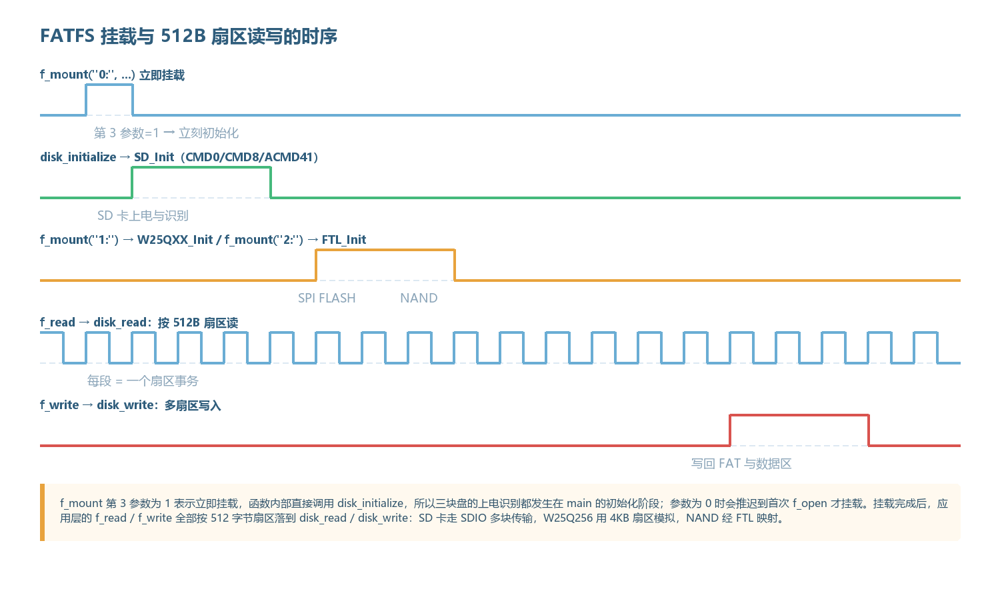
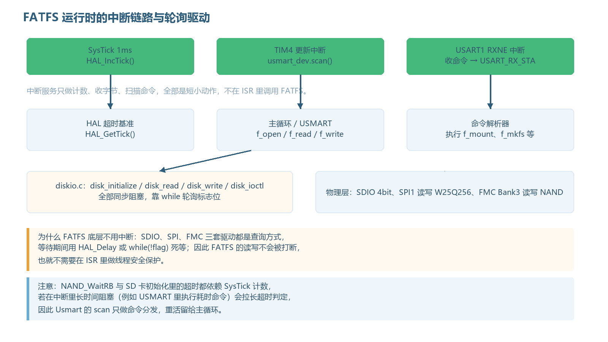
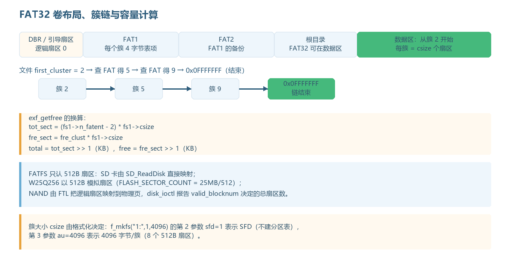

01 实验目标与三磁盘资源
在同一套 FATFS 上同时挂载 SD 卡、W25Q256 与 NAND，用统一 API 访问文件
前三个实验分别解决了“块设备怎么读写”，本实验解决“怎么在这些块设备上放文件”。FATFS 是 ChaN 的通用 FAT 文件系统模块，不关心底层是 SDIO、SPI 还是 FMC，只要求底层提供 512 字节扇区的读写函数。工程通过 diskio.c 把三个物理磁盘映射成 0: / 1: / 2: 三个卷，应用层只写 f_open/f_read/f_write。
| 卷标 | 物理设备 | 底层驱动 | 容量 / 扇区数 | 格式化参数 |
|---|---|---|---|---|
0: | SD 卡 | SD_ReadDisk / SD_WriteDisk（SDIO 4bit） | CardCapacity / 512 | 出厂已带 FAT，无需格式化 |
1: | W25Q256 SPI FLASH | W25QXX_Read / W25QXX_Write（SPI5 45MHz） | 前 25MB，51200 个 512B 扇区 | f_mkfs("1:",1,4096) |
2: | NAND FLASH | FTL_ReadSectors / FTL_WriteSectors（FMC） | valid_blocknum × 每块扇区数 | f_mkfs("2:",1,4096) |
| 源文件 | 作用 |
|---|---|
FATFS/src/ff.c | FAT12/16/32/exFAT 核心：挂载、目录、簇链、文件读写 |
FATFS/src/ffconf.h | 裁剪配置：3 个卷、GBK 代码页、长文件名、exFAT |
FATFS/src/diskio.c | 卷号 → 物理驱动的分发与返回值转换 |
FATFS/exfuns/exfuns.c | 内存申请、容量换算、文件/文件夹复制 |
FATFS/exfuns/fattester.c | USMART 用的文件系统测试命令集 |
_VOLUMES = 3
_MAX_SS = 512
_CODE_PAGE = 936
_USE_LFN = 3
_FS_EXFAT = 1
_USE_MKFS = 1
一个容易忽略的点：FATFS 的
_MAX_SS 固定为 512，所以 NAND 的 2048B 页、W25Q256 的 4KB 扇区都必须由驱动层“降维”成 512B 事务，这就是 diskio.c 里循环调用 W25QXX_Read 和 FTL 的 SectorSize=512 的原因。02 FATFS 分层架构
从 f_read 到 SDIO 波形，一次读文件要穿过五层

分层的价值在于“换存储不改应用”：把 SD 卡换成 NAND，只需要改 diskio.c 里的 case 分支，f_open/f_read 一行都不用动。反过来，升级 FATFS 版本也只需替换 ff.c/ff.h，底层驱动保持原样。
| 层 | 关键函数 | 输入 | 输出 |
|---|---|---|---|
| 应用 | main、fattester | 文件名、缓冲区 | 用户可见的结果 |
| API | f_mount/f_open/f_read/f_write/f_getfree | 卷标路径、FIL 对象 | FRESULT |
| 核心 | ff.c 内部函数 | 目录项、FAT 表 | 簇号、扇区号 |
| 适配 | disk_read/disk_write/disk_ioctl | 物理盘号、LBA | DRESULT |
| 驱动 | SD_ReadDisk 等 | 字节地址、扇区数 | 0 或错误码 |
03 启动流程总览
三块盘依次挂载，遇到 FR_NO_FILESYSTEM 就格式化，最后统计 SD 卡容量

注意挂载顺序：SD_Init() 成功后才执行 FTL_Init()，再 exfuns_init() 申请 FATFS 工作区，最后才是三次 f_mount。若顺序颠倒，f_mount 内部调用 disk_initialize 时会因驱动未初始化而返回 STA_NOINIT。
main() 全文
int main(void)
{
u32 total,free;
u8 t=0;
u8 res=0;
HAL_Init(); // HAL：缓存、NVIC 分组、1ms 时基
Stm32_Clock_Init(360,25,2,8); // 180MHz
delay_init(180);
uart_init(115200);
usmart_dev.init(90); // TIM4 每 100ms 扫描命令
LED_Init();
KEY_Init();
SDRAM_Init();
LCD_Init();
W25QXX_Init(); // SPI5 45MHz，读 ID 识别 W25Q256
my_mem_init(SRAMIN); // 内部池：FATFS 工作区都从这里来
my_mem_init(SRAMEX);
my_mem_init(SRAMCCM);
POINT_COLOR=RED;
LCD_ShowString(30,50,200,16,16,"Apollo STM32F4/F7");
LCD_ShowString(30,70,200,16,16,"FATFS TEST");
LCD_ShowString(30,90,200,16,16,"ATOM@ALIENTEK");
LCD_ShowString(30,110,200,16,16,"2016/1/16");
LCD_ShowString(30,130,200,16,16,"Use USMART for test");
while(SD_Init()) // SD 卡识别失败就一直重试
{
LCD_ShowString(30,150,200,16,16,"SD Card Error!");
delay_ms(500);
LCD_ShowString(30,150,200,16,16,"Please Check! ");
delay_ms(500);
LED0=!LED0;
}
FTL_Init(); // NAND + FTL，返回值被忽略
exfuns_init(); // 为 fs[]/file/ftemp/fatbuf 申请内存
f_mount(fs[0],"0:",1); // 挂载 SD 卡（opt=1 立即挂载）
res=f_mount(fs[1],"1:",1); // 挂载 SPI FLASH
if(res==0X0D) // FR_NO_FILESYSTEM：没有 FAT 文件系统
{
LCD_ShowString(30,150,200,16,16,"Flash Disk Formatting...");
res=f_mkfs("1:",1,4096); // sfd=1 不建分区表，au=4096 字节/簇
if(res==0)
{
f_setlabel((const TCHAR *)"1:ALIENTEK"); // 设置卷标
LCD_ShowString(30,150,200,16,16,"Flash Disk Format Finish");
}else LCD_ShowString(30,150,200,16,16,"Flash Disk Format Error ");
delay_ms(1000);
}
res=f_mount(fs[2],"2:",1); // 挂载 NAND
if(res==0X0D)
{
LCD_ShowString(30,150,200,16,16,"NAND Disk Formatting...");
res=f_mkfs("2:",1,4096);
if(res==0)
{
f_setlabel((const TCHAR *)"2:NANDDISK");
LCD_ShowString(30,150,200,16,16,"NAND Disk Format Finish");
}else LCD_ShowString(30,150,200,16,16,"NAND Disk Format Error ");
delay_ms(1000);
}
LCD_Fill(30,150,240,150+16,WHITE);
while(exf_getfree("0:",&total,&free)) // total/free 单位 KB
{
LCD_ShowString(30,150,200,16,16,"SD Card Fatfs Error!");
delay_ms(200);
LCD_Fill(30,150,240,150+16,WHITE);
delay_ms(200);
LED0=!LED0;
}
POINT_COLOR=BLUE;
LCD_ShowString(30,150,200,16,16,"FATFS OK!");
LCD_ShowString(30,170,200,16,16,"SD Total Size: MB");
LCD_ShowString(30,190,200,16,16,"SD Free Size: MB");
LCD_ShowNum(30+8*14,170,total>>10,5,16); // KB → MB
LCD_ShowNum(30+8*14,190,free>>10,5,16);
while(1)
{
t++; // 主循环只做心跳，文件测试走 USMART
delay_ms(200);
LED0=!LED0;
}
}
关键逻辑说明
- 为什么三个
f_mount的第三个参数都是 1：opt=1 表示立即挂载，函数内部会调用disk_initialize并在fs[]里登记；opt=0 则只是注销卷，推迟到首次访问才真正初始化。 - 返回值 0x0D 是什么：
FR_NO_FILESYSTEM（13），表示扇区 0 找不到合法的 FAT 引导记录。SPI FLASH 与 NAND 出厂是空白，第一次必然返回它，所以必须格式化。 f_mkfs的参数：第 1 个是卷标；第 2 个sfd=1表示不建分区表（整盘一个卷）；第 3 个au=4096是分配单元大小（字节/簇）。- 总容量与剩余容量单位：
exf_getfree输出 KB，LCD 上要显示 MB，所以右移 10 位；这个函数失败时返回非 0，用来驱动重试循环。 - 为什么
FTL_Init()不检查返回值：SD 卡已保证可用，NAND 即使失败也只影响 2: 盘；后续f_mount("2:")会返回错误并在 LCD 上暴露。
04 启动文件与向量表
栈与堆的大小会直接影响 FATFS 的长文件名与递归复制
Stack_Size EQU 0x400; // 1KB 主栈 Heap_Size EQU 0x200; // 512B 标准库堆 AREA RESET, DATA, READONLY EXPORT __Vectors __Vectors DCD __initial_sp // 栈顶 DCD Reset_Handler // 复位入口 DCD NMI_Handler DCD HardFault_Handler // …其余异常向量… DCD SysTick_Handler // 1ms 时基 // …TIM4_IRQHandler、USART1_IRQHandler 等在表后半段… Reset_Handler PROC EXPORT Reset_Handler [WEAK] IMPORT SystemInit IMPORT __main LDR R0, =SystemInit BLX R0 // 时钟/FPU/向量表 LDR R0, =__main BX R0 // C 库初始化 → main ENDP ALIGN AREA HEAP, NOINIT, READWRITE, ALIGN=3 __heap_base Heap_Mem SPACE Heap_Size __heap_limit
关键逻辑说明
- 栈 1KB 与
_USE_LFN=3：该配置把长文件名缓冲区放在栈上（最大 255 字符，约 510 字节），所以 FATFS 调用链本身就可能吃掉半栈，函数内不宜再放大数组。 - 递归风险：
exf_fdsize与exf_fdcopy会按目录层级递归，目录很深时栈会持续增长；实际工程应限制递归深度或改用显式栈。 - 堆 0x200 的限制：FATFS 的
ff_memalloc走的是mymalloc(SRAMIN,…)，不是标准库malloc；所以堆大小只影响sprintf等库函数。 - 向量表：
SystemInit把SCB->VTOR指向FLASH_BASE，中断入口与启动文件中的弱符号一一对应。
05 SystemInit 与 HAL_Init
HAL_Init 建立时基，FATFS 的 disk_initialize 才能用 HAL_Delay 做超时
void SystemInit(void)
{
#if (__FPU_PRESENT == 1) && (__FPU_USED == 1)
SCB->CPACR |= ((3UL << 10*2)|(3UL << 11*2)); // 使能 FPU
#endif
RCC->CR |= (uint32_t)0x00000001;
RCC->CFGR = 0x00000000;
RCC->CR &= (uint32_t)0xFEF6FFFF;
RCC->PLLCFGR = 0x24003010;
RCC->CR &= (uint32_t)0xFFFBFFFF;
RCC->CIR = 0x00000000;
SCB->VTOR = FLASH_BASE | VECT_TAB_OFFSET; // 向量表基址
}
HAL_StatusTypeDef HAL_Init(void)
{
__HAL_FLASH_INSTRUCTION_CACHE_ENABLE();
__HAL_FLASH_DATA_CACHE_ENABLE();
__HAL_FLASH_PREFETCH_BUFFER_ENABLE();
HAL_NVIC_SetPriorityGrouping(NVIC_PRIORITYGROUP_2); // 2 位抢占 + 2 位子优先级
HAL_InitTick(TICK_INT_PRIORITY); // 0x0F
HAL_MspInit();
return HAL_OK;
}
关键逻辑说明
- 调用者：
SystemInit由启动文件调用，HAL_Init由 main 第一行调用，二者之间隔着 C 库的__main。 - 参数与返回值：两者都无入参；
SystemInit无返回值，HAL_Init返回HAL_OK。 - 与 FATFS 的联系：
hal.sd的卡识别超时、SPI 读写超时都用HAL_GetTick，所以 HAL_Init 必须先执行，否则超时计数永远是 0。 - 优先级分组：分组 2 决定了 TIM4 与 USART1 的 3/3 都是合法值，也让 FATFS 的长时间擦除不会被更高优先级中断打断。
06 时钟树与三个存储时钟
HCLK 180MHz、PCLK2 90MHz、SDIO 45MHz，各自决定了底层驱动的速度上限
| 节点 | 算式 | 结果 | 服务于 |
|---|---|---|---|
| Fvco | 25MHz × 360 / 25 | 360MHz | PLL 输出 |
| SYSCLK / HCLK | 360 / 2，AHB 分频 1 | 180MHz | CPU、FMC、DMA |
| PCLK1 | HCLK / 4 | 45MHz | APB1 |
| APB1 定时器 | 45 × 2 | 90MHz | TIM4（USMART 100ms） |
| PCLK2 | HCLK / 2 | 90MHz | SPI5 的时钟源 |
| SPI5 波特率 | 90MHz / 2 | 45MHz | W25Q256 读写 |
| PLL48CK | 360 / 8 | 45MHz | SDIO |
| SDIO_CK | 45MHz / (0 + 2) | 22.5MHz | SD 卡 4bit 传输 |
void Stm32_Clock_Init(u32 plln,u32 pllm,u32 pllp,u32 pllq)
{
HAL_StatusTypeDef ret = HAL_OK;
RCC_OscInitTypeDef RCC_OscInitStructure;
RCC_ClkInitTypeDef RCC_ClkInitStructure;
__HAL_RCC_PWR_CLK_ENABLE();
__HAL_PWR_VOLTAGESCALING_CONFIG(PWR_REGULATOR_VOLTAGE_SCALE1);
RCC_OscInitStructure.OscillatorType=RCC_OSCILLATORTYPE_HSE;
RCC_OscInitStructure.HSEState=RCC_HSE_ON;
RCC_OscInitStructure.PLL.PLLState=RCC_PLL_ON;
RCC_OscInitStructure.PLL.PLLSource=RCC_PLLSOURCE_HSE;
RCC_OscInitStructure.PLL.PLLM=pllm;
RCC_OscInitStructure.PLL.PLLN=plln;
RCC_OscInitStructure.PLL.PLLP=pllp;
RCC_OscInitStructure.PLL.PLLQ=pllq;
ret=HAL_RCC_OscConfig(&RCC_OscInitStructure);
if(ret!=HAL_OK) while(1);
ret=HAL_PWREx_EnableOverDrive();
if(ret!=HAL_OK) while(1);
RCC_ClkInitStructure.ClockType=(RCC_CLOCKTYPE_SYSCLK|RCC_CLOCKTYPE_HCLK|RCC_CLOCKTYPE_PCLK1|RCC_CLOCKTYPE_PCLK2);
RCC_ClkInitStructure.SYSCLKSource=RCC_SYSCLKSOURCE_PLLCLK;
RCC_ClkInitStructure.AHBCLKDivider=RCC_SYSCLK_DIV1;
RCC_ClkInitStructure.APB1CLKDivider=RCC_HCLK_DIV4;
RCC_ClkInitStructure.APB2CLKDivider=RCC_HCLK_DIV2;
ret=HAL_RCC_ClockConfig(&RCC_ClkInitStructure,FLASH_LATENCY_5);
if(ret!=HAL_OK) while(1);
}
关键逻辑说明（时钟）
- 参数：
plln/pllm/pllp/pllq对应 PLL 的倍频、前分频、系统分频与 48MHz 域分频，本工程 360/25/2/8。 - 返回值：无返回值，失败即
while(1)；调试时看 PC 停在哪一步可快速判断是晶振还是分频问题。 - 为什么 SPI5 是 45MHz：SPI5 挂 APB2（90MHz），
SPI_BAUDRATEPRESCALER_2得到 45MHz；W25Q256 支持 104MHz，45MHz 留有余量。 - 为什么改主频要重编译驱动：SDIO 分频、SPI 分频、FMC 时序、delay 的
fac_us都按 180MHz 写死或计算，改频率必须逐项复核。
delay_init 与毫秒级等待
void delay_init(u8 SYSCLK)
{
HAL_SYSTICK_CLKSourceConfig(SYSTICK_CLKSOURCE_HCLK); // SysTick 时钟源 = HCLK
fac_us=SYSCLK; // 180 → 1us 计 180 个数
}
void delay_us(u32 nus)
{
u32 ticks,told,tnow,tcnt=0;
u32 reload=SysTick->LOAD;
ticks=nus*fac_us;
told=SysTick->VAL;
while(1)
{
tnow=SysTick->VAL;
if(tnow!=told)
{
if(tnow<told)tcnt+=told-tnow;
else tcnt+=reload-tnow+told; // 回绕
told=tnow;
if(tcnt>=ticks)break;
}
}
}
关键逻辑说明（延时）
- 参数与返回值：
delay_init传入主频 MHz 值，无返回值；delay_us传入微秒数，无返回值。 - 为何 FATFS 需要 ms 级等待：W25Q256 的扇区擦除约 45ms、整片擦除更久；
W25QXX_Write内部用delay_ms等待忙状态结束。 - 不精确但够用：读
SysTick->VAL的延时受中断影响，FATFS 的时序要求是微秒到毫秒级，误差可以接受。
07 三磁盘挂载与 diskio 适配
f_mount 只做三件事：登记工作区、初始化物理盘、读引导扇区

#define SD_CARD 0 // 卷标 0：SD 卡 #define EX_FLASH 1 // 卷标 1：W25Q256 #define EX_NAND 2 // 卷标 2：NAND DSTATUS disk_initialize(BYTE pdrv) { u8 res=0; switch(pdrv) { case SD_CARD: res=SD_Init(); break; // 失败返回非 0 case EX_FLASH: W25QXX_Init(); break; // 无返回值，内部读 ID case EX_NAND: res=FTL_Init(); break; // NAND + 坏块表 default: res=1; } if(res)return STA_NOINIT; else return 0; } DRESULT disk_read(BYTE pdrv,BYTE *buff,DWORD sector,UINT count) { u8 res=0; if(!count)return RES_PARERR; // 0 个扇区视为参数错误 switch(pdrv) { case SD_CARD: res=SD_ReadDisk(buff,sector,count); while(res) // 读失败：重初始化再重试 { SD_Init(); res=SD_ReadDisk(buff,sector,count); } break; case EX_FLASH: for(;count>0;count--) { W25QXX_Read(buff,sector*FLASH_SECTOR_SIZE,FLASH_SECTOR_SIZE); sector++; buff+=FLASH_SECTOR_SIZE; } res=0; break; case EX_NAND: res=FTL_ReadSectors(buff,sector,512,count); // 逻辑扇区 → 物理页 break; default: res=1; } if(res==0x00)return RES_OK; else return RES_ERROR; }
关键逻辑说明（diskio）
- 作用：把 FATFS 的“物理盘号 + LBA + 扇区数”翻译成具体驱动的调用，并把返回值统一成
DRESULT。 - 参数与返回值：
pdrv0~2、buff缓冲、sector起始 LBA、count数量；返回RES_OK/RES_ERROR/RES_PARERR。 - SD 的重试逻辑：读失败时先
SD_Init()再重读，直到成功。这种“死等”适合演示，但量产代码必须加次数上限，否则卡拔掉会永久卡住。 - W25Q256 的扇区模拟：一次只读 512B，循环
count次；sector*512得到字节地址，偏移量由驱动内部再按 4 字节地址模式处理。 - NAND 的 512 参数：
FTL_ReadSectors(buff,sector,512,count)明确告诉 FTL 扇区大小为 512，与 FATFS 的_MAX_SS一致。
exfuns_init 与三次 f_mount
FATFS *fs[_VOLUMES]; // 三个逻辑磁盘工作区 FIL *file; // 文件对象 1 FIL *ftemp; // 文件对象 2 UINT br,bw; // 读写字节数 FILINFO fileinfo; // 文件信息 DIR dir; // 目录对象 u8 *fatbuf; // 512B 数据缓存 u8 exfuns_init(void) { u8 i; for(i=0;i<_VOLUMES;i++) { fs[i]=(FATFS*)mymalloc(SRAMIN,sizeof(FATFS)); // 每个卷一个工作区 if(!fs[i])break; } file=(FIL*)mymalloc(SRAMIN,sizeof(FIL)); ftemp=(FIL*)mymalloc(SRAMIN,sizeof(FIL)); fatbuf=(u8*)mymalloc(SRAMIN,512); if(i==_VOLUMES&&file&&ftemp&&fatbuf)return 0; // 全部成功 else return 1; } // main 中的挂载 f_mount(fs[0],"0:",1); // SD：已格式化，直接可用 res=f_mount(fs[1],"1:",1); // SPI FLASH：空白盘返回 0x0D res=f_mount(fs[2],"2:",1); // NAND：空白盘同样返回 0x0D
关键逻辑说明（挂载）
- 为什么 FATFS 工作区要动态申请：
FATFS结构体约 500 字节，3 个卷就近 1.5KB；放在内部 SRAM 池可以按需分配，也方便统一释放。 - 返回值检查：
exfuns_init返回 0 表示 3 个 FATFS + 2 个 FIL + 1 个 512B 缓冲全部申请成功；任一失败返回 1。 f_mount的第三个参数：1 = 立即挂载并初始化物理盘；0 = 只注册工作区。首次挂载必须用 1，否则f_mount不会去读引导扇区。- 挂载失败不等于硬件坏：返回 0x0D 只说明“没有文件系统”，格式化即可；返回
FR_NOT_READY才是驱动初始化失败。
08 扇区读写路径与容量统计
f_read 一次读 512B，最终落到 disk_read；容量统计靠 FAT 表项数反推

// FATFS 内部的读路径（简化）
FRESULT f_read(FIL* fp, void* buff, UINT btr, UINT* br)
{
// 1. 按 fp->fptr 与簇大小算出当前簇、簇内偏移
// 2. 若缓冲区为空，调用 get_fat() 找到下一个簇
// 3. 计算该簇对应的扇区号，调用 disk_read()
// 4. 把数据拷到用户缓冲，更新 fp->fptr 与 *br
}
// 应用层的典型用法（fattester / USMART）
res=f_open(file,"0:test.txt",FA_READ|FA_OPEN_EXISTING);
if(res==0)
{
res=f_read(file,fatbuf,512,(UINT*)&br); // 最多读 512B
f_close(file);
}
// 容量统计：由 FAT 表项数反推总扇区
u8 exf_getfree(u8 *drv,u32 *total,u32 *free)
{
FATFS *fs1;
u8 res;
u32 fre_clust=0, fre_sect=0, tot_sect=0;
res =(u32)f_getfree((const TCHAR*)drv, (DWORD*)&fre_clust, &fs1);
if(res==0)
{
tot_sect=(fs1->n_fatent-2)*fs1->csize; // 总簇数 × 每簇扇区
fre_sect=fre_clust*fs1->csize; // 空闲簇 × 每簇扇区
*total=tot_sect>>1; // 扇区数/2 = KB
*free=fre_sect>>1; // 扇区数/2 = KB
}
return res;
}
关键逻辑说明（读写与容量）
f_read的参数与返回值：fp文件对象、buff目标缓冲、btr请求字节数、br实际读出字节数；返回FRESULT，FR_OK为成功。- 为什么要按簇读：FAT 是簇链结构，文件在磁盘上不连续；
f_read每次只处理一个簇，簇读完再查 FAT 找下一个，所以底层看到的是离散的 512B 事务。 - 扇区数转 KB 为什么右移 1：1 个扇区 512B = 0.5KB，扇区数除以 2 即 KB；LCD 再右移 10 位得到 MB。
n_fatent - 2的依据：FAT 表项 0 和 1 是保留项，簇号从 2 开始，所以可用簇数要减 2。f_getfree的第三个参数：输出指向该卷的FATFS指针，后面用它的csize、n_fatent做换算，避免重复挂载。
写路径与 f_mkfs
// f_write 的关键步骤（简化）
FRESULT f_write(FIL* fp, const void* buff, UINT btw, UINT* bw)
{
// 1. 若当前簇用完，调用 create_chain() 申请新簇并写 FAT
// 2. 把用户数据拷到扇区缓冲，必要时先 disk_read 做“读-改-写”
// 3. 调用 disk_write() 写回扇区
// 4. 更新目录项中的文件大小与时间
}
// 格式化 SPI FLASH（main 中调用）
res=f_mkfs("1:",1,4096);
// sfd=1：SFD 方式，不创建 MBR 分区表
// au=4096：每个簇 4096 字节，即 8 个 512B 扇区
// 设置卷标
f_setlabel((const TCHAR *)"1:ALIENTEK");
关键逻辑说明（写与格式化）
- 为什么写比读复杂：写可能跨越簇边界，需要分配新簇、更新 FAT 链和目录项；若只改一个扇区的部分字节，还要先读出来再合并。
f_mkfs的三个参数：卷标、sfd（0=FDISK 分区表，1=SFD 无分区表）、au（分配单元字节数）。- 簇大小怎么选：4096 字节/簇在 25MB 的 SPI FLASH 上约有 6400 个簇，兼顾空间利用率与 FAT 表大小。
f_setlabel：把卷标写进根目录的卷标项，Windows 上看到的就是 “ALIENTEK” / “NANDDISK”。
09 中断链路
FATFS 本身不产生中断，但它依赖的驱动会关中断、会等 R/B

| 触发源 | NVIC 优先级 | ISR | 与 FATFS 的关系 |
|---|---|---|---|
| SysTick 1ms | SysTick_IRQn，0x0F | SysTick_Handler | HAL 超时、delay 的时基 |
| USART1 RXNE | 3/3 | USART1_IRQHandler | 接收 USMART 命令 |
| TIM4 更新 | 3/3 | TIM4_IRQHandler | 每 100ms 调用 usmart_dev.scan() |
| SDIO / FMC / SPI | 未配置 | 无 | 全部查询方式，不占中断 |
void SysTick_Handler(void)
{
HAL_IncTick(); // 1ms 计数，FATFS 驱动的超时基准
}
void USART1_IRQHandler(void)
{
u8 Res;
if(__HAL_UART_GET_FLAG(&UART1_Handler,UART_FLAG_RXNE)!=RESET)
{
HAL_UART_Receive(&UART1_Handler,&Res,1,1000);
if((USART_RX_STA&0x8000)==0)
{
if(USART_RX_STA&0x4000)
{
if(Res!=0x0a)USART_RX_STA=0;
else USART_RX_STA|=0x8000; // 收到 \r\n，一帧结束
}
else
{
if(Res==0x0d)USART_RX_STA|=0x4000;
else
{
USART_RX_BUF[USART_RX_STA&0X3FFF]=Res;
USART_RX_STA++;
if(USART_RX_STA>(USART_REC_LEN-1))USART_RX_STA=0;
}
}
}
}
HAL_UART_IRQHandler(&UART1_Handler);
}
void TIM4_IRQHandler(void)
{
if(__HAL_TIM_GET_IT_SOURCE(&TIM4_Handler,TIM_IT_UPDATE)==SET)
{
usmart_dev.scan(); // 解析 f_open/f_read 等测试命令
__HAL_TIM_SET_COUNTER(&TIM4_Handler,0);
__HAL_TIM_SET_AUTORELOAD(&TIM4_Handler,100);
}
__HAL_TIM_CLEAR_IT(&TIM4_Handler, TIM_IT_UPDATE);
}
关键逻辑说明
- 为什么 FATFS 会关中断：
SD_ReadDisk在查询模式下先INTX_DISABLE()，防止 FIFO 溢出；这会同时推迟 SysTick，导致HAL_GetTick少走几毫秒。 - SPI FLASH 的等待：
W25QXX_Wait_Busy轮询状态寄存器，不用中断；擦除 4KB 扇区约 45ms，这段时间主循环完全阻塞。 - USMART 的优先级：TIM4 与 USART1 同级，USMART 执行命令期间串口不能再次进入中断，长命令要分多次发。
- 文件操作测试入口：本实验主循环不做事，所有
f_open/f_write测试都通过 USMART 在串口输入，例如f_open(...)、f_read(...)。
10 主循环与现象
主循环只剩心跳，真正的文件测试交给串口命令行
while(1)
{
t++; // 仅用于计数，无其他用途
delay_ms(200); // 200ms 节拍
LED0=!LED0; // DS0 以 2.5Hz 闪烁
}
关键逻辑说明
- 为什么主循环这么空：FATFS 的验证需要指定文件名、模式、长度，用按键无法表达，所以工程把测试做成 USMART 命令，主循环只保留心跳。
- t 变量：自增但未参与判断，属于预留变量；编译优化开启时可能被优化掉，不影响功能。
- LED0 的作用：PB1 翻转证明程序没有卡死在某个驱动里；若灯停，说明正在执行长耗时操作（如格式化或大文件复制）。
| 阶段 | LCD 现象 | 说明 |
|---|---|---|
| 未插 SD 卡 | “SD Card Error!” / “Please Check!” 交替，DS0 闪 | while(SD_Init()) |
| SPI FLASH 首次挂载 | “Flash Disk Formatting...” → “Format Finish” | 返回 0x0D 后 f_mkfs |
| NAND 首次挂载 | “NAND Disk Formatting...” → “Format Finish” | 同上，卷标 NANDDISK |
| 全部成功 | “FATFS OK!”、总容量/剩余容量（MB） | exf_getfree |
| SD 文件系统损坏 | “SD Card Fatfs Error!” 闪烁 | exf_getfree 非 0 |
11 FAT32 布局与扇区映射
DBR、FAT1、FAT2、根目录、数据区，加上一条簇链就是整个文件系统

// 三个磁盘的 ioctl 参数（diskio.c）
DRESULT disk_ioctl(BYTE pdrv,BYTE cmd,void *buff)
{
if(pdrv==SD_CARD)
{
switch(cmd)
{
case GET_SECTOR_SIZE: *(DWORD*)buff=512; break;
case GET_BLOCK_SIZE: *(WORD*)buff=SDCardInfo.CardBlockSize; break;
case GET_SECTOR_COUNT: *(DWORD*)buff=SDCardInfo.CardCapacity/512; break;
default: return RES_PARERR;
}
}else if(pdrv==EX_FLASH)
{
switch(cmd)
{
case GET_SECTOR_SIZE: *(WORD*)buff=FLASH_SECTOR_SIZE; break; // 512
case GET_BLOCK_SIZE: *(WORD*)buff=FLASH_BLOCK_SIZE; break; // 8
case GET_SECTOR_COUNT: *(DWORD*)buff=FLASH_SECTOR_COUNT; break;// 1024*25*2
default: return RES_PARERR;
}
}else if(pdrv==EX_NAND)
{
switch(cmd)
{
case GET_SECTOR_SIZE: *(WORD*)buff=512; break; // NAND 强制 512B 扇区
case GET_BLOCK_SIZE: *(WORD*)buff=nand_dev.page_mainsize/512; break;
case GET_SECTOR_COUNT: *(DWORD*)buff=nand_dev.valid_blocknum*nand_dev.block_pagenum*nand_dev.page_mainsize/512; break;
default: return RES_PARERR;
}
}
return RES_OK;
}
// 目录遍历：fattester 中的典型片段
res=f_opendir(&dir,"0:/");
while(res==FR_OK)
{
res=f_readdir(&dir,&fileinfo); // 取一个目录项
if(res!=FR_OK||fileinfo.fname[0]==0)break;
printf("%s\r\n",fileinfo.fname);
}
f_closedir(&dir);
关键逻辑说明
- GET_SECTOR_COUNT 的意义：FATFS 用它计算卷的总扇区数；NAND 必须用
valid_blocknum而不是block_totalnum，否则会把坏块算进容量。 - GET_BLOCK_SIZE 的意义：返回擦除块包含的扇区数，FATFS 的
f_mkfs会用它对齐簇和 FAT 区，避免跨擦除块写。 - 簇链的读法：目录项给出首簇号，FAT 表项给出下一簇，直到读到
0x0FFFFFFF（EOC）结束；每个表项 4 字节是 FAT32 的特征。 - FAT1/FAT2 为什么两份：FAT2 是 FAT1 的备份，任一损坏可用另一份恢复；FATFS 默认写两份，但读取以 FAT1 为准。
- 时间戳为 0：
get_fattime()返回 0，所以新建文件的日期显示为 1980-01-01；需要真实时间要接 RTC 并实现该函数。
12 串口调试与 USMART 测试
没有按键交互，所有文件系统测试都在串口命令行完成
int fputc(int ch, FILE *f)
{
while((USART1->SR&0X40)==0); // 等 TXE
USART1->DR=(u8)ch;
return ch;
}
void uart_init(u32 bound)
{
UART1_Handler.Instance=USART1;
UART1_Handler.Init.BaudRate=bound;
UART1_Handler.Init.WordLength=UART_WORDLENGTH_8B;
UART1_Handler.Init.StopBits=UART_STOPBITS_1;
UART1_Handler.Init.Parity=UART_PARITY_NONE;
UART1_Handler.Init.HwFlowCtl=UART_HWCONTROL_NONE;
UART1_Handler.Init.Mode=UART_MODE_TX_RX;
HAL_UART_Init(&UART1_Handler);
}
// 常用 USMART 命令（函数已在 usmart_config.c 注册）
// f_mount(fs[0],"0:",1)
// f_open(file,"0:test.txt",FA_READ|FA_OPEN_EXISTING)
// f_read(file,fatbuf,512,&br)
// f_close(file)
// exf_getfree("0:",&total,&free)
// 文件复制（exfuns.c），用于验证大文件读写
u8 exf_copy(u8(*fcpymsg)(u8*,u8,u8),u8 *psrc,u8 *pdst,u32 totsize,u32 cpdsize,u8 fwmode)
{
// 打开源/目的文件 → 循环 f_read 8192B → f_write → 更新进度
// 返回 0 成功，0xFF 表示用户强制退出
}
关键逻辑说明
- fputc：把 printf 的输出重定向到 USART1，参数
ch为字符，返回ch；没有它串口助手看不到任何调试信息。 - USMART 的扫描周期：TIM4 每 100ms 调一次
scan()，所以命令回显最多延迟 100ms；命令必须以回车换行结束。 - 为什么用 USMART 测 FATFS：文件操作需要路径、模式、长度等参数，命令行可以灵活组合，还能直接看到返回值（
FRESULT）。 - 中文文件名：
_CODE_PAGE=936支持 GBK 中文，串口助手需用 GBK 编码发送，否则f_open会返回FR_NO_FILE。 - 复制缓冲 8192B：
exf_copy每次读 8KB 再写，比 512B 循环快得多；缓冲从 SRAMIN 申请，失败返回 100。
13 关键逻辑复盘与排查
挂载失败先看返回值，读写失败先看扇区数是否超界
| 现象 | 可能原因 | 排查方法 |
|---|---|---|
| 0: 挂载返回 FR_NOT_READY | SD_Init 失败、卡未插好 | 看 LCD 是否停在 “SD Card Error!” |
| 1: 一直格式化失败 | W25Q256 写保护、SPI5 速率过高、扇区数配置错误 | 降速到 22.5MHz 试；查 FLASH_SECTOR_COUNT=51200 |
| 2: 挂载成功但读写出错 | NAND 坏块过多、FTL 未初始化 | 看串口 bad block 日志；确认 FTL_Init 返回 0 |
| 容量显示异常大/小 | disk_ioctl 的 GET_SECTOR_COUNT 算错 | 分别打印三个盘的扇区数核对 |
| 中文文件名打不开 | 代码页不是 936 或串口编码不匹配 | 确认 _CODE_PAGE=936，串口助手切 GBK |
| 文件时间全是 1980-01-01 | get_fattime 返回 0 | 正常现象；需要真实时间就接 RTC |
| 复制大文件卡住 | SD 读错误进入无限重试 | 给 while(res) 加重试上限 |
复盘要点
- FATFS 的三次挂载对应三个完全独立的卷，
fs[0..2]必须各自有工作区，不能共用一个FATFS结构体。 f_mount的 opt=1 才会立即初始化物理盘；用 0 时错误会推迟到第一次文件操作才暴露。- 所有驱动最终都要提供 512B 扇区语义，物理页/扇区更大时在 diskio 层循环或由 FTL 屏蔽。
FR_NO_FILESYSTEM是“空白盘”的正常返回，不要当成硬件故障。- 文件系统的时间、卷标、簇大小都属于“格式化参数”，改
au会直接影响容量统计与碎片程度。
14 交互演示
点击按钮复现挂载成功/格式化两个分支，仅演示逻辑
f_mount 返回值分支演示（仅演示逻辑）
DS0（PB1）
DS1（PB0）
最后按键：无 当前状态：DS0 灭 DS1 灭
真实代码中挂载成功走
exf_getfree 显示容量，返回 0x0D 走 f_mkfs 并设置卷标；演示面板只用两个指示灯表示两条分支被执行，不代表真实 LED 行为。